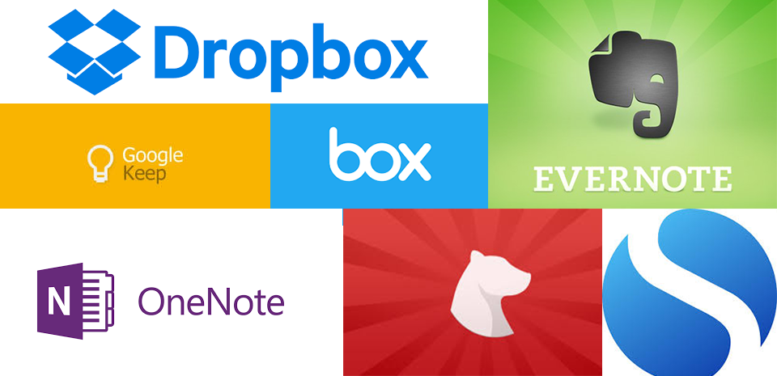
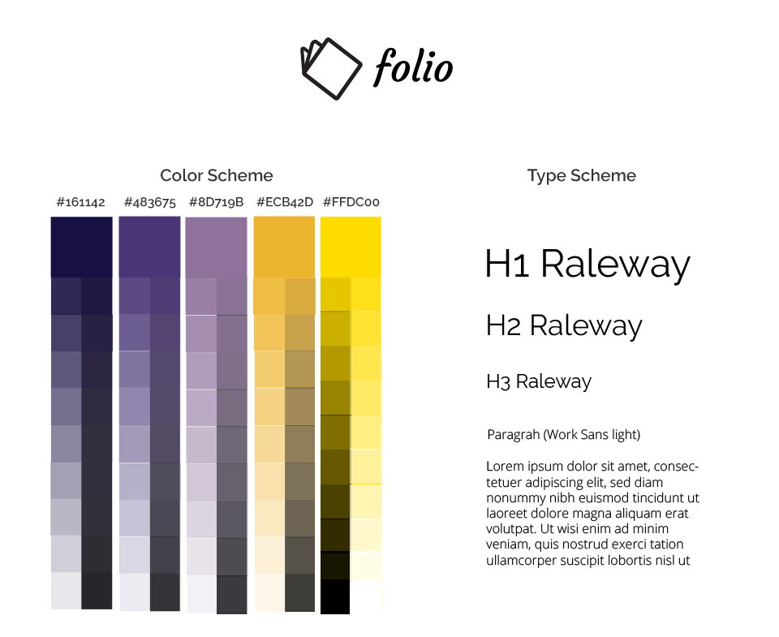

Folio is a notetaking and content-sharing platform I researched, structured and designed as part of my coursework for Bloc. The challenge in this three-week concept project was devising a new platform in the already saturated market of web applications that allow people to collect and store information.
The platform needed to adhere to the business requirements of the the assignment, but go a step beyond in identifying user frustrations with their current information storing solutions to help make the final product stand out from the crowded business landscape.
A selection of the many players in the note-taking and content-sharing space.
To address this, I set out to research and design an interface that accomplished the following:
- Captured all the pages and flows required by the business requirements (e.g. landing page, dashboard page, account onboarding).
- Identified user pain-points with other notetaking and content sharing platforms, and find ways to address them within the business requirements.
- Created a unique and visually distinctive visual design and branding that sets the platform apart in a crowded landscape.
My solution was Folio, an application that met the business requirements but added additional search and organizational functionality for users to track and find their content. My branding plan was also constructed with an eye to set Folio apart from its competitors.
My first step was to conduct a high-level SWOT analysis on existing platforms that allow users to store information. I compared Box.com, Evernote and Google’s note-taking platform Keep. These three provided a solid introduction to the market. Strikingly, all three are positioned as both a consumer and business solution, though they fell across a broad spectrum between these markets. Box was primarily focused on it’s B2B offering, Evernote promoted both with an emphasis on its business solutions, and Keep is still primarily a consumer solution despite its recent integration into G Suite (Google’s business targeted suite of applications aimed at businesses).
Strikingly, all three are positioned as both a consumer and business solution, though they fell across a broad spectrum between these markets.
This clarified that the purpose of the user research should be to identify where along this spectrum my note-taking and content sharing app should try to position itself.
In light of this analysis I built a survey to send out to a variety of respondents (students and professionals aged 18+). The survey indicated that the majority of respondents were equally likely to be taking notes or saving/sharing content for personal reasons or for work/professional reasons. Comments in the notes indicated a general fatigue with the plethora of options available to them, and a frustration with how to easily access their notes or content across different environments.
It also indicated that note-taking in particular was viewed as a highly personal activity. While most expected to share photos or links, almost no respondents expected to share their notes with other individuals, either professionally or in their personal lives.
Some additional take-aways from the survey, and how people generally save/share content and take notes can be found below:
Survey topic |
Most popular method |
Most frequent pain-point |
Key comments |
Note-taking |
|
Accessing notes easily, across environments |
Multiple respondents remarked that they preferred hand-writing notes because it was fastest/most accessible |
Saving content |
|
Keeping track of saved content |
Most people thought their methods for saving content were not effective |
Using these responses, I created three user personas to guide the development of the platform.
Sample user profile for Folio.
While it would be difficult to design a solution all three would find ideal, the takeaways from the survey I tried to imbue in each of them are:
- Users want to be able to take notes quickly
- Users want to be able to easily find content they save
- Users want to be to access content and notes across devices/environments
With these personas and these guiding principles, I set out to architect a platform.
Using my personas as guides, I constructed the User Stories and Flows to guide the development of the first version of this platform.

A selection of prioritized User Stories for new users.
A selection of User Flows.
Next I created a sitemap to provide visual infrastructure to user stories and flows.
The sitemap for Folio.
While the user stories, user flows were fairly straight were fairly straightforward, the wireframes proved challenging. The dashboard should offer users a variety of options and functionalities, and determining their visual prioritization was not an easy task. My first attempt was too busy to have a clear hierarchy:
By putting favorites and tags in the side navivation bar along with the item types I inadvertantly confused the purpose of the navigation bar.
After review I realized that by combining the types of items one can add (notes, images and links) with functionalities like “favorite” and “tags”, I had diluted the clarity of the navigation. Subsequently, I revised the design, so that only item types and designated folders were on the side navigation. I moved collaborators to account settings, and added a sort by functionality and a search to the main dashboard area to help users quickly find items they want to edit.
This version is more successful, because I streamline the side navigation and only have the most important item types there.
The rest of the wireframes can be found here:
After my SWOT analysis I decided it was important to come up with a unique niche within the content storing/note-taking landscape for Folio. I also decided to position the product as a solution for creatives, both in order to appeal to the fierce individuality that emerged when people discussed their note-taking and content saving habits, and to capitalize on a part of the market where I saw an opening. Box, Evernote, and even Google’s Keep are clearly positioning themselves as business solutions in the white-collar, traditional office sense. My having a more creative undertone I thought my product would stand out from the crowd and potentially have a stronger appeal to creative agencies and individuals who either are or believe themselves to be engaged in more imaginative endeavors.
Logo: I chose folio as the name for this platform. At this point it is used largely in historical contexts, but as it literally refers to a book or gather of written pages I thought it fit a notetaking app. Moreover, the historical associations underscored the creative angle I was going for--we mostly here the word now used in old books or in association with versions of Shakespeare’s works.
Typeface: Raleway served as my font for headings, and I paired it with Work Sans as the body text. Work Sans is a designed for screen use and is clear across all devices. Raleway is also optimized for screens, but the small, grotesque-style details in its lettering give it a more old-fashioned feel that pairs well with the name Folio.
Color scheme: With color-selection I was highly conscious of avoiding color schemes already used by competitors in the space (e.g. the light green of Evernote or the medium blues of Box and Dropbox) The complementary purple and yellow color scheme utilizes the creative associations that purple brings to underscore the creative brand positioning, and the yellow is a bright accent color that helps illuminate calls-to-action (CTAs) throughout the site.
The final logo, fonts and color scheme.
Since adding new content was one of the most important functionalities of this platform, especially in light of survey respondents complaining about how heavy-weight notetaking apps can be, I conducted a nav test to see if new users could easily figure out how to add content. Users completed the task between one and six seconds.
The high-fidelity mockups brought together my information architecture and my branding vision, informed by user testing.
This was the first platform I designed as part of my UX Design coursework, so my learning curve was very streep throughout. While I think some of the greatest strengths of the final design are within the dashboard organization, particularly in adding the search functionality to the side-nav and giving users the ability to sort their content, I believe I could have gone farther in making this easily navigable.
For instance, I had the chance to go back and do it again I would like to test whether people would want to the option to to sort their content by favorites. My decision in giving people the user the option to sort their content by date created, date last modified, and title, was based on seeing how competitors sorted their content. However, I would have liked to do my own organic testing around that to see if there were other ways users would like to sort the content on their dashboard.
Overall I think the design executes very well against the business requirements, and goes an extra step with a branding scheme that sets it apart from real competitors.